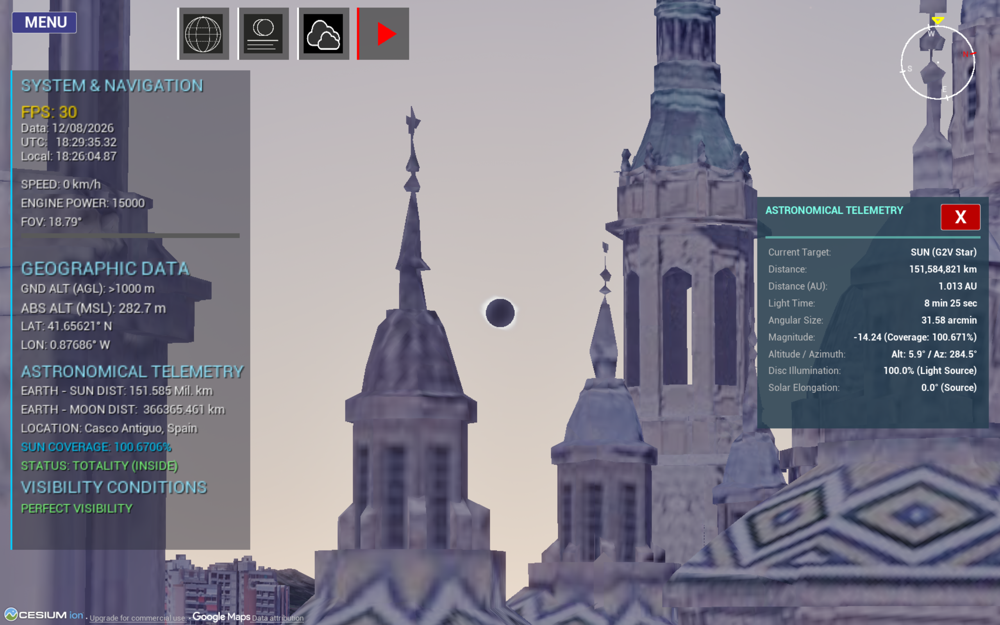
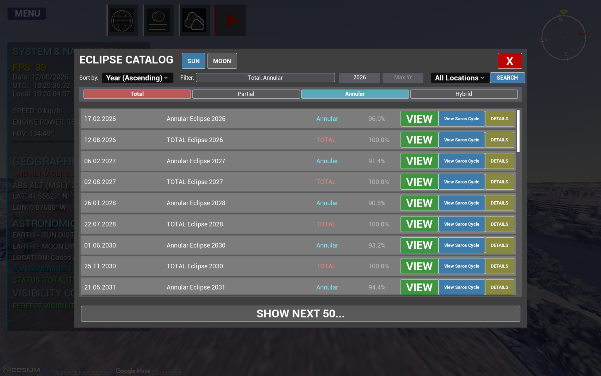
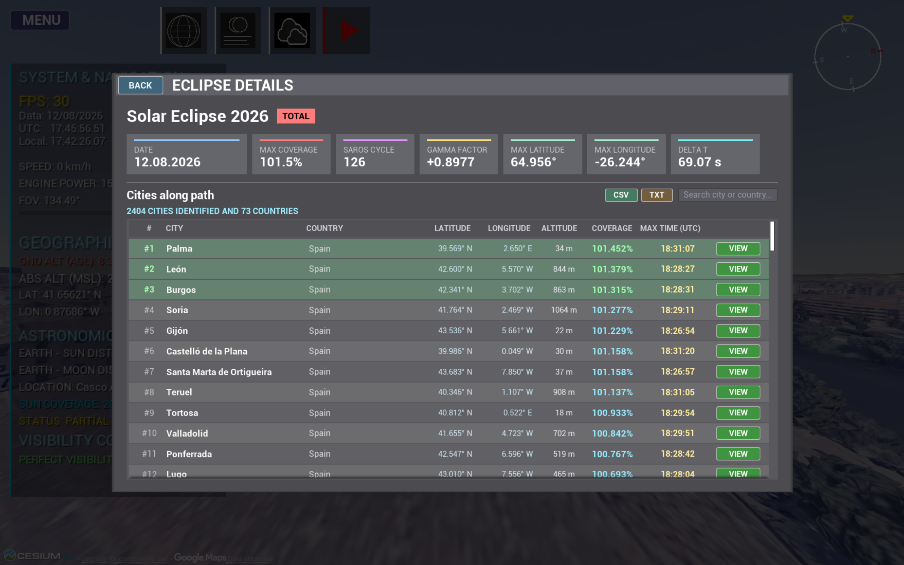
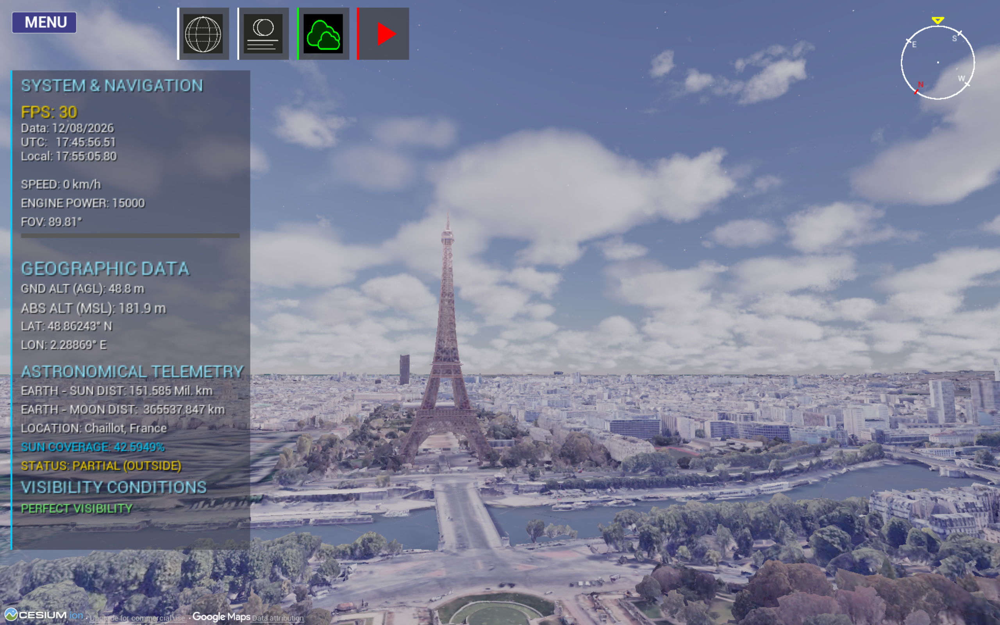
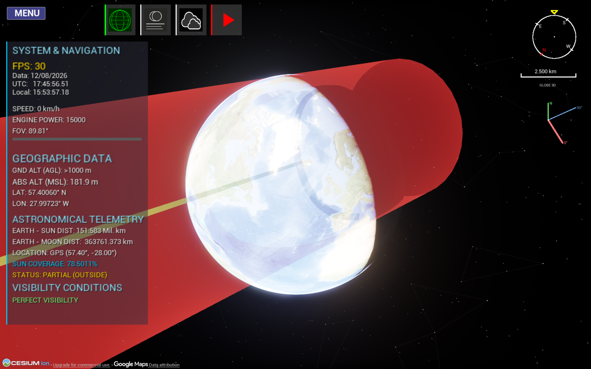
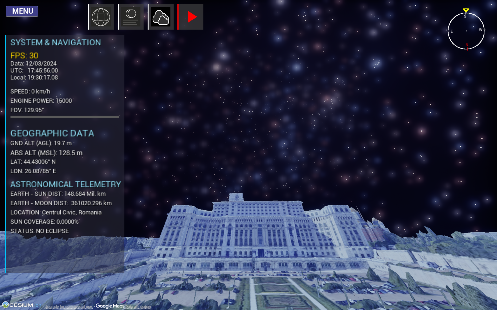
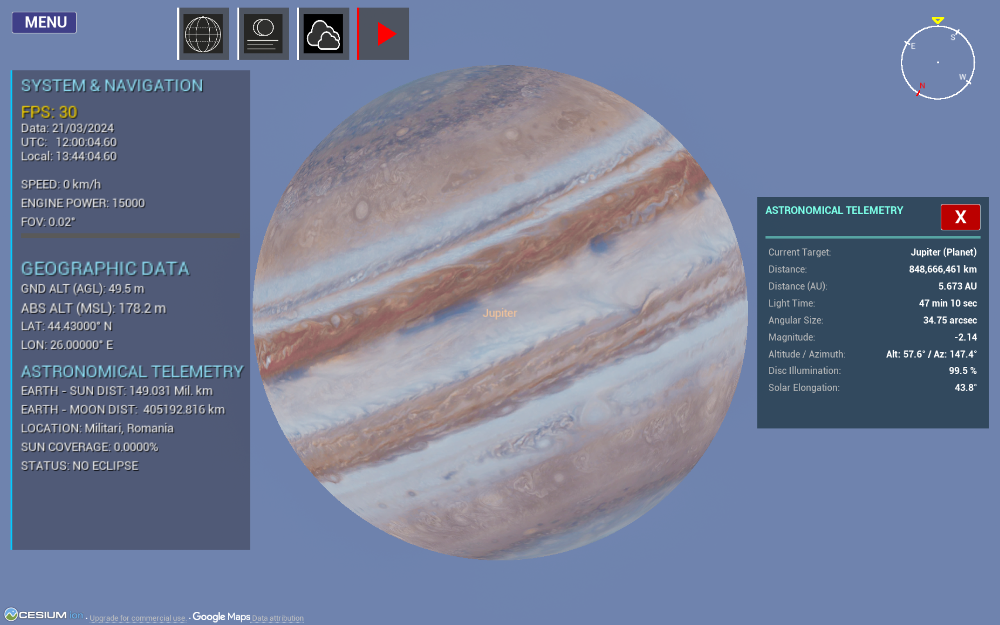

M.Sc. in Data Science
Politehnica Bucharest, Sep 2026 to present
Admitted early, in May 2026.
I build machine learning systems and real-time 3D simulations.
Computer Science graduate (GPA 3.83/4), now studying for an M.Sc. in Data Science at Politehnica Bucharest. I'm looking for a junior role in machine learning, data science or software engineering, full-time or part-time.

A real-time simulator of all four types of solar eclipse. It shows the Moon's shadow (umbra and penumbra) as 3D cones over realistic terrain, with the path of totality drawn as a 3D band on an accurate model of the Earth.
I compared five existing tools: Stellarium, Celestia, SpaceEngine, The Photographer's Ephemeris and Xavier Jubier's simulator. None of them shows these shadow cones, and most offer only 2D maps or tables.
I checked the eclipse timings against Xavier Jubier's reference tool. They were within 1 second for the 12 August 2026 eclipse and 1.5 seconds for 2 August 2027. For the 2017 eclipse, Stellarium was 8 minutes off.
The catalogue also covers 72,272 lunar eclipses. You can search it and see the cities on the map. The app also has time controls, bookmarks, weather effects, a Romanian and English interface, and other planet and moon systems (Jupiter, Saturn, Neptune).






Built with Unreal Engine 5, C++, Python, Skyfield, Cesium for Unreal, JPL DE441, GeoPy, UDP, multithreading. Open source on GitHub.
Each one pairs a concrete problem with a measured result.
We implemented the full Canny edge-detection pipeline in C++ and parallelized it in eight variants: Pthreads, OpenMP, MPI, CUDA and four hybrids of them.
Built with C++, CUDA, OpenMP, MPI, Pthreads, Intel VTune, Nsight Compute, perf, Make, Git.
Computer vision and NLP, Jan 2026
Repository on GitHubTwo deep learning problems, built and compared in PyTorch.
Built with Python, PyTorch, Albumentations, FastText, AdamW, OneCycleLR, scikit-learn, Matplotlib, pandas.
I benchmarked 7 regression models with 5-fold cross-validation on used-car prices (23,734 Autovit listings) and bike-rental demand (10,886 records).
Built with Python, scikit-learn, pandas, NumPy, seaborn, joblib.
An educational prototype, built during the 3DPUB Summer School, that turns free-text symptoms into a list of likely conditions. It uses Sentence Transformers embeddings, K-Nearest Neighbors with cosine similarity and PCA for speed. Model caching and an offline TF-IDF fallback keep it working without a network, and a desktop chatbot (Gradio and PyWebView) wraps it.
Built with Python, Sentence Transformers, scikit-learn, pandas, NumPy, joblib, Gradio, PyWebView.
A push-only Sokoban solver using LRTA* and obstacle-aware A* and BFS heuristics, with deadlock detection. It solves 8 of 9 benchmark maps in under 14 seconds each.
Built with Python, Tkinter, A*, BFS, LRTA*, Simulated Annealing.
The tools I've used in the projects above.
Politehnica Bucharest, Sep 2026 to present
Admitted early, in May 2026.
Politehnica Bucharest, Oct 2022 to Jul 2026. GPA 3.83/4
Coursework: Data Structures and Algorithms, OOP, Parallel and Distributed Algorithms, Operating Systems, Programming Paradigms, Communication Protocols, Advanced Graphic Programming, Machine Learning.
Sep 2018 to Jun 2022
Scientific Communications Session for Students, May 2026
Presented the eclipse simulator, which I later released as a downloadable product.
1st prize, National Physics Contest "Phi". 3rd prize, "Gazeta Matematică" National Olympiad. 3rd prize, National Physics Olympiad.
Computer Graphics, Jun to Sep 2025
7 modules, 2021
I'm open to junior Machine Learning Engineer, Data Scientist and Software Engineer roles, full-time or part-time. Email is the fastest way to reach me.